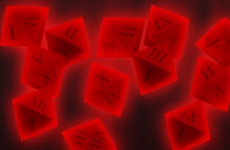

Updated 2 days ago
399 pages
Comic
Morenastuck
By RedTheHunter
Created in Februatry 2012, Morenastuck is a webcomic based on the famous webcomic called Homestuck.
Follow the adventures of Hiroyuki and his friends, working his way through the Medium, in order to save
their planet from imminent destruction! Will they manage to alchemize the Ultimate Turtle before the countdown ends?

Updated 13 hours ago
6231 pages
Comic
Homestuck
By Andrew Hussie
Homestuck begins when thirteen-year-old John Egbert receives a beta copy of an upcoming computer game,
called "Sburb," in the mail.
Installing and running the game on his computer triggers a meteor attack on
his real-life house, which survives by being transported to another planet, thus immersing him completely within
the world of Sburb.
As John's friends Rose Lalonde, Dave Strider, and Jade Harley join the game with him, they
learn that they have unwittingly triggered the end of the world, and that it is their duty to play the game and
thereby see the story through to its completion.

Updated 4 days ago
522 pages
Comic
Slightly Damned
By Chu
Slightly Damned is a story-driven comic in a fantasy setting.
It has comedy, romance, drama, and some violence and swearing.
Updates on Wednesday and Saturday.